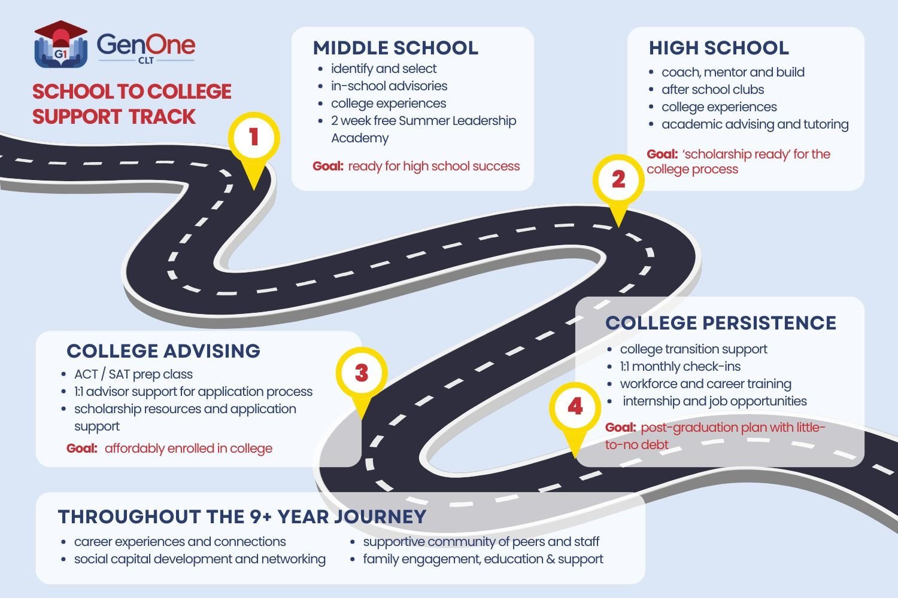
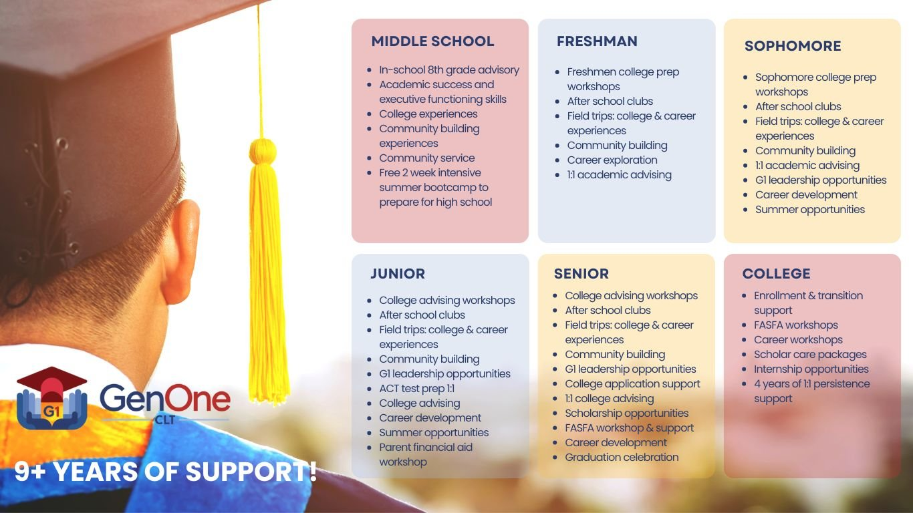
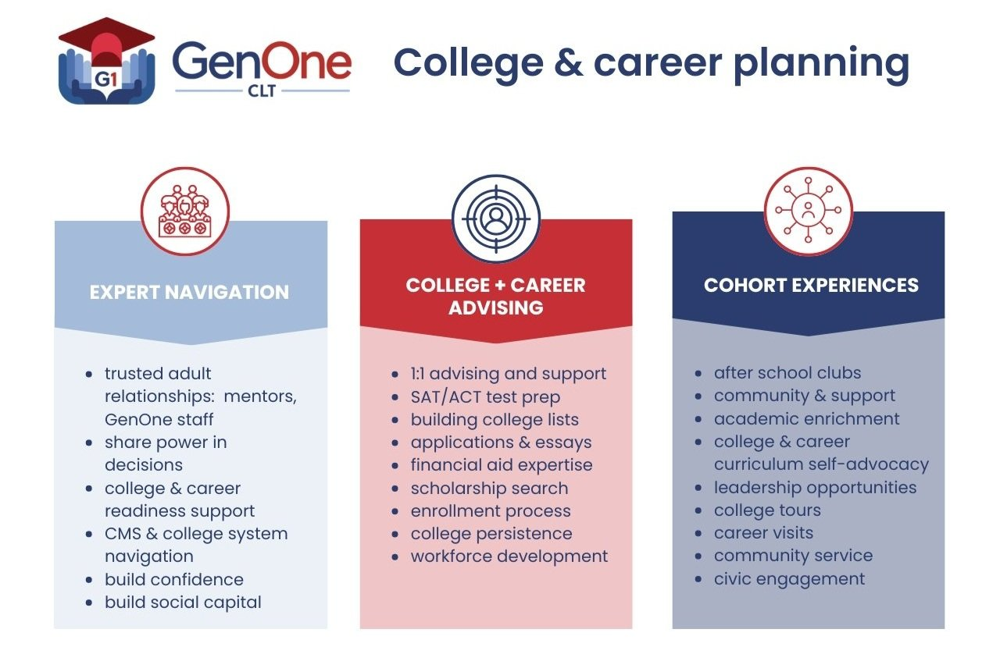
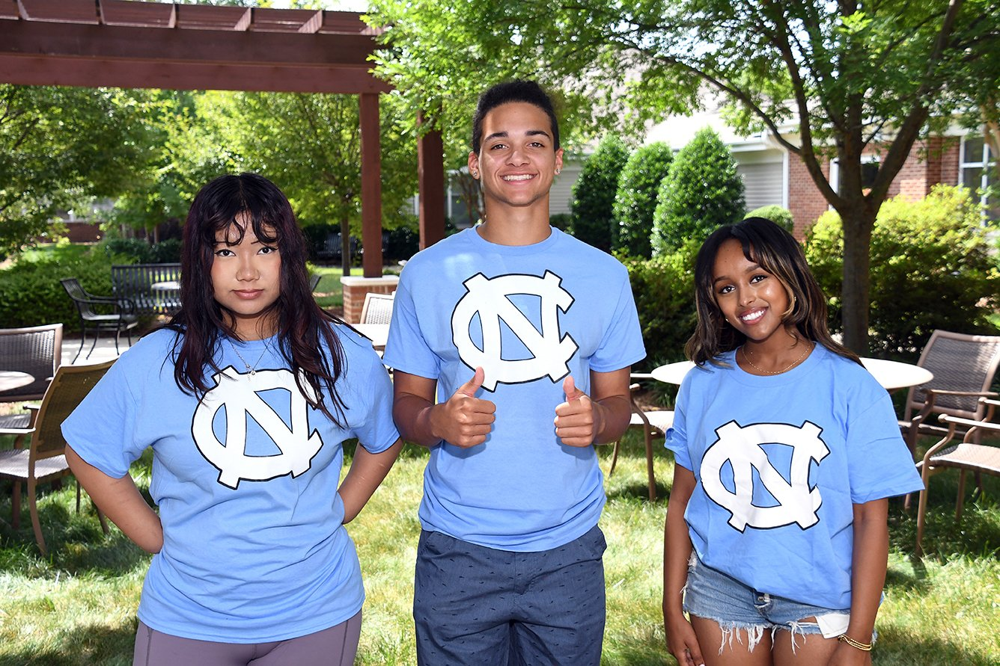

The GenOne Program
Apply Today!Overview
A pathway of support from middle school through college graduation
GenOne selects a group of Scholars each year and commits to supporting them for 10–12 years. Students and families gain a sustained partnership as they navigate school, prepare for college, and explore future careers.
Grounded in trust, relationships, and expert guidance, our program helps Scholars work toward college graduation with minimal debt and greater career and economic opportunities.
The journey

Middle School
- Bullet Point
- Bullet Point
- Bullet Point
- Bullet Point
- Bullet Point
High School
- Bullet Point
- Bullet Point
- Bullet Point
- Bullet Point
- Bullet Point
College
- Bullet Point
- Bullet Point
- Bullet Point
- Bullet Point
- Bullet Point
Post Grad
- Bullet Point
- Bullet Point
- Bullet Point
- Bullet Point
- Bullet Point
How we support scholars
Scholars build trusted relationships with GenOne staff, mentors, and peers. Alongside academic and college guidance, they receive opportunities to strengthen their confidence, practice self-advocacy, and build connections.
Support grows with each stage of the journey—from preparing for high school to navigating college. Family engagement, education, and support help students and their families make informed decisions along the way.

College & career planning

A personalized plan for every Scholar
College planning begins before high school. Our College & Career Advisors help Scholars identify their goals, research colleges, complete applications, and navigate financial aid and scholarships. Individual guidance helps each Scholar pursue an affordable education that connects with their interests and future plans.
Enrichment & Experiences
Scholars build community and discover new interests through college visits, career exploration, community service, leadership courses, cooking classes, and visual and performing arts experiences.
-
College Tour Experiences
Scholars explore college campuses through visits tailored to first-generation college students. Experiences go beyond admissions presentations and are often co-led by college students with similar backgrounds.
-
Career Experiences & Connections
Visits to companies, nonprofits, and government agencies introduce Scholars to different career paths. Advisors help students discover their strengths and interests and connect them with real-world opportunities.
-
Building Networks & Opportunities
Through after-school programs, college and career visits, and internship connections, Scholars learn to build relationships that can open doors. Summer opportunities help them explore career interests and strengthen their college applications.
Frequently asked questions

Does GenOne provide scholarships for College?
Yes and no. GenOne has scholarship partners who provide scholarships uniquely to GenOne Scholars. Some are competitive to local or regional markets, and while others are reserved for Scholars who meet specific eligibility criteria. GenOne only provides direct college scholarships to a small number of Scholars (1-2) dependent on funds available and considerable financial need.
This is not guaranteed for each Scholar!
GenOne is a college preparatory program that supports students in becoming “scholarship ready.” We also support Scholars in conducting comprehensive scholarship searches, writing scholarship essays, completing the Free Application for Federal Student Aid (FAFSA), interpreting college financial aid award letters, and making an informed, affordable college decision.
When, how, and who can become a scholar?
We open applications to become a GenOne Scholar in the Fall (August - September) and Spring (March - April) semesters.
Follow us on social media (@genoneclt), and check out how to apply on our scholar application page.
Does GenOne provide transportation?
Yes, GenOne can provide transportation as needed to students in East Charlotte. GenOne partners with Aldersgate to provide small van / bus transportation.
Students and families outside of East Charlotte (and those further away from GenOne programs still located in East Charlotte) must be comfortable with Uber in order to receive transportation services if you're in need of transportation.
Does GenOne provide services to students once they are in college?
Yes! This is why we have a college persistence program. Check out this page to see the services we offer for persistence.
Currently, this service is reserved for students who went through GenOne's College Advising program.
How can I apply to work at GenOne?
Job openings are funding dependent. Follow and check out our LinkedIn page (GenOne Charlotte) where we'll post future positions, and check back on our website here.
Middle School Scholars
Deadline: Closed Until 2027
High School Scholars
Deadline: Due December, 2026